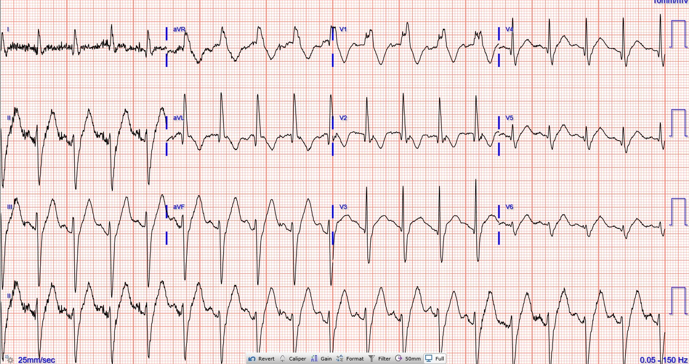
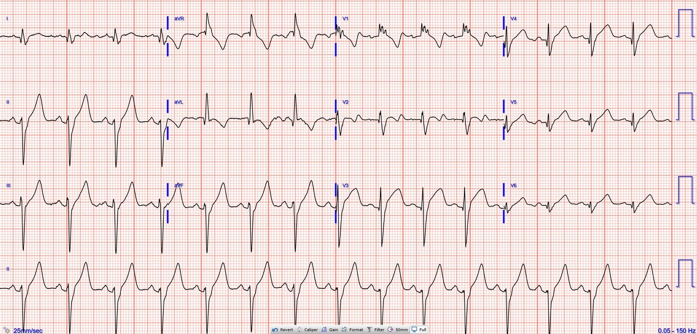
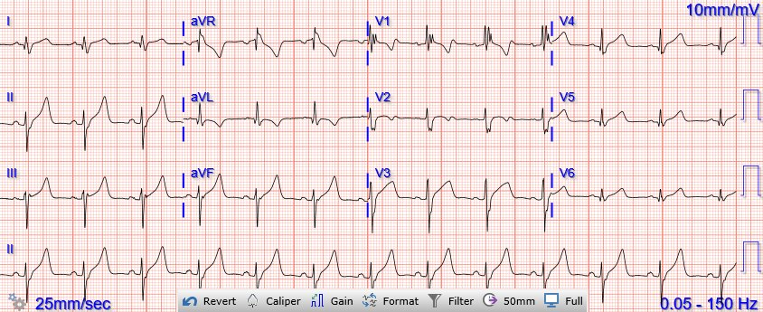
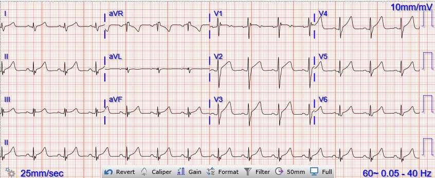
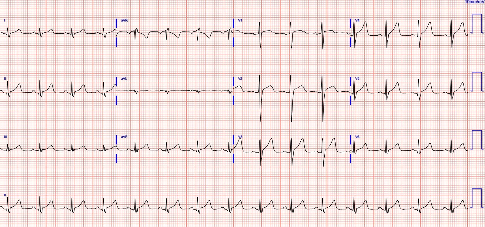
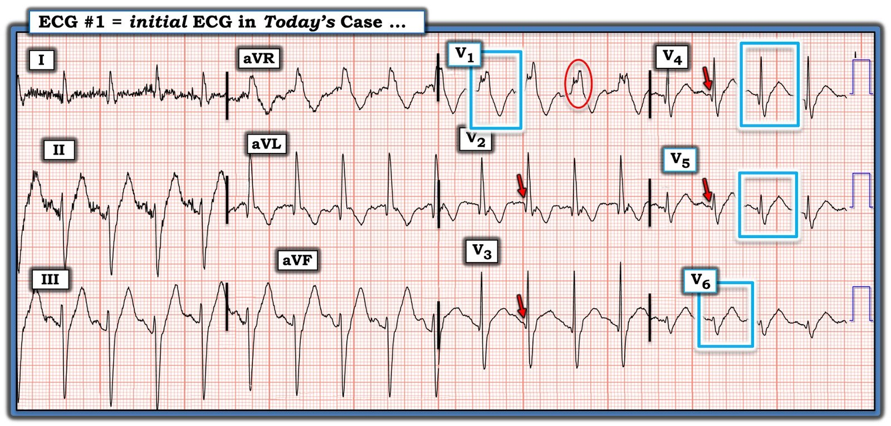

06/02/2024 — Một thiếu niên bị tai nạn xe cơ giới với điện tâm đồ bất thường
Bản dịch tiếng Việt của bài "A teenager involved in a motor vehicle collision with abnormal ECG" – Dr. Smith’s ECG Blog. Giữ nguyên toàn bộ 7 hình ảnh của bản gốc.
Tác giả: Pendell Meyers
Một thiếu niên bị tai nạn giao thông (va chạm xe cơ giới) và được đội cấp cứu ngoài viện (EMS) đưa tới khoa cấp cứu (ED) trong tình trạng rối loạn ý thức, có thể đang nguy kịch. Bệnh nhân được đặt nội khí quản vì rối loạn ý thức. Khám ban đầu nghi ngờ có chấn thương ngực.
Đây là điện tâm đồ đầu tiên của bệnh nhân, ghi lúc khoảng 1330:


Điện tâm đồ cho thấy nhịp nhanh xoang kèm RBBB và LAFB, không có dấu hiệu thiếu máu cục bộ rõ ràng chồng thêm. Rất khó có khả năng một thiếu niên trước đó khỏe mạnh lại có bệnh lý hệ dẫn truyền như vậy, điều này gợi đến khả năng tổn thương tim do chấn thương kín (blunt cardiac injury) trong bối cảnh lâm sàng này.
CT chấn thương cho thấy “gãy xương ức di lệch nhẹ và một khối máu tụ nhỏ sau xương ức.” Không ghi nhận tổn thương nào trên hình ảnh CT đầu/cột sống/bụng/chậu.
Troponin I độ nhạy cao ban đầu: 3,830 ng/L (giới hạn trên tham chiếu (URL) 20 ng/L ở nam)
1445:


1520:


Troponin:
3,830 ng/L
4,098 ng/L
1,343 ng/L
Siêu âm tim:
Thất trái: kích thước buồng và bề dày thành bình thường. Chức năng tâm thu giảm nhẹ khi đánh giá bằng mắt. EF 45%, giảm động lan tỏa mức độ nhẹ.
Thất phải: kích thước buồng bình thường. Chức năng tâm thu bình thường, chỉ đánh giá bằng mắt, không quan sát rõ được để mô tả thêm.
1900:


2300:


Không phát hiện thêm tổn thương đáng kể nào khác. Bệnh nhân diễn tiến tốt và được xuất viện. Không chụp MRI tim. Hy vọng bệnh nhân sẽ được siêu âm tim lại ở tuyến ngoại trú.
Xem các ca đụng dập cơ tim khác của chúng tôi và các ca liên quan (một số ca trong đó có chẩn đoán quan trọng KHÁC VỚI đụng dập cơ tim!):
A Child with Blunt Trauma (Một trẻ bị chấn thương kín) — Xem điện tâm đồ có thể chẩn đoán chắc chắn đụng dập cơ tim nhưng lại kín đáo như thế nào, và điều gì xảy ra nếu bạn bỏ sót nó.
Massive Transfusion for Motorcycle Collision with Hemorrhage, Troponin Elevated. (Truyền máu khối lượng lớn do tai nạn xe máy có xuất huyết, troponin tăng.)
ECG of pneumopericardium and probable myocardial contusion shows typical pericarditis (Điện tâm đồ của tràn khí màng ngoài tim và nhiều khả năng đụng dập cơ tim cho thấy hình ảnh viêm màng ngoài tim điển hình)
Male in 30’s, 2 days after Motor Vehicle Collsion, complains of Chest Pain and Dyspnea (Nam giới độ tuổi 30, 2 ngày sau tai nạn xe cơ giới, than đau ngực và khó thở)
Head On Motor Vehicle Collision. ST depression. Myocardial Contusion? (Tai nạn xe cơ giới đâm trực diện. ST chênh xuống. Đụng dập cơ tim?)
Gunshot wound to the chest with ST Elevation (Vết thương do đạn bắn vào ngực kèm ST chênh lên)
Would your radiologist make this diagnosis, or should you record an ECG in trauma? (Bác sĩ chẩn đoán hình ảnh của bạn có đưa ra chẩn đoán này không, hay bạn nên ghi điện tâm đồ trong chấn thương?)
Blunt Trauma in a Child (Chấn thương kín ở trẻ em)
40-something male in a head-on Motor Vehicle Collision and Splenic Injury (Nam giới hơn 40 tuổi bị tai nạn xe cơ giới đâm trực diện và tổn thương lách)
A man in his 40s with multitrauma from motor vehicle collision (Một người đàn ông ngoài 40 tuổi bị đa chấn thương do tai nạn xe cơ giới)
Dưới đây là một số thông tin về tổn thương tim do chấn thương kín, trích từ một bài đăng trước đây của chúng tôi:
Điện tâm đồ nhìn chung không nhạy đối với đụng dập tim (cardiac contusion). Thất phải chiếm phần lớn mặt trước của tim, là phần dễ bị tổn thương trực tiếp nhất trong chấn thương ngực kín. Đụng dập tim có thể biểu hiện trên điện tâm đồ theo nhiều cách, bao gồm: ST chênh lên hoặc chênh xuống, QT kéo dài, sóng Q mới, rối loạn dẫn truyền như RBBB, blốc phân nhánh, rối loạn dẫn truyền qua nút nhĩ thất (AV) (blốc AV độ 1,2 và 3), và các rối loạn nhịp như nhịp nhanh xoang, ngoại tâm thu nhĩ và thất, rung nhĩ, nhịp nhanh thất, rung thất, nhịp chậm xoang và nhịp nhanh nhĩ (Sybrandy). RBBB trong chấn thương ngực kín dường như là dấu hiệu chỉ điểm tổn thương thất phải nặng. Rung nhĩ cũng là yếu tố tiên đoán kết cục xấu hơn trong trường hợp này (Alborzi).
Xem các công bố này để biết thêm thông tin
Nhìn chung, xử trí đụng dập tim chủ yếu là hỗ trợ trừ khi xuất hiện biến chứng cần phẫu thuật, bao gồm điều trị thích hợp các rối loạn nhịp và tình trạng mất ổn định huyết động. Rốt cuộc, điện tâm đồ bình thường và troponin bình thường ở thời điểm 4-6 giờ sau chấn thương ban đầu có giá trị tiên đoán cao rằng sẽ không có biến chứng tim về sau trong chấn thương ngực kín. Khoảng 81-95% các rối loạn nhịp thất đe dọa tính mạng và suy tim cấp xảy ra trong vòng 24-48 giờ nằm viện. Cần theo dõi diễn biến troponin và điện tâm đồ cho đến khi trở về bình thường (Sybrandy).
Vỡ tim muộn là một hậu quả có thể xảy ra, đặc biệt nếu có bất kỳ ST chênh lên nào. Xem ca này, ca này, và ca này. Ở những bệnh nhân có nguy cơ, nên hạn chế hoạt động thể lực trong vài tháng sau chấn thương.
Tài liệu tham khảo
Alborzi, Z., Zangouri, V., Paydar, S., Ghahramani, Z., Shafa, M., Ziaeian, B., Radpey, M. R., Amirian, A., & Khodaei, S. (ngày 13 tháng Tư năm 2016). Diagnosing myocardial contusion after blunt chest trauma. The journal of Tehran Heart Center. Truy cập ngày 2 tháng Bảy năm 2022, từ https://www.ncbi.nlm.nih.gov/pmc/articles/PMC5027160/
Moyé, D. M., Danielle M. Moyé From the Division of Cardiology, Dyer, A. K., Adrian K. Dyer From the Division of Cardiology, Thankavel, P. P., Poonam P. Thankavel From the Division of Cardiology, & The Data Supplement is available at http://circimaging.ahajournals.org/lookup/suppl/doi:10.1161/CIRCIMAGING.114.002857/-/DC1.Correspondence to Poonam Punjwani Thankavel. (ngày 1 tháng Ba năm 2015). Myocardial contusion in an 8-year-old boy. Circulation: Cardiovascular Imaging. Truy cập ngày 2 tháng Bảy năm 2022, từ https://www.ahajournals.org/doi/10.1161/CIRCIMAGING.114.002857
Sybrandy, K. C., Cramer, M. J. M., & Burgersdijk, C. (tháng Năm năm 2003). Diagnosing cardiac contusion: Old Wisdom and new insights. Heart (British Cardiac Society). Truy cập ngày 2 tháng Bảy năm 2022, từ https://www.ncbi.nlm.nih.gov/pmc/articles/PMC1767619/

===================================
BÌNH LUẬN CỦA TÔI, bởi KEN GRAUER, MD (6/2/2024):
===================================
Ca bệnh hôm nay của Dr. Meyers mang lại cái nhìn sâu sắc về diễn tiến tuần tự của các điện tâm đồ liên tiếp trong quá trình đụng dập tim.
- Để rõ ràng, trong Hình 1 — tôi đã sao chép lại và đánh dấu một số dấu hiệu trên điện tâm đồ ban đầu của ca hôm nay.
Điện tâm đồ Ban đầu trong Ca bệnh Hôm nay:
Như Dr. Meyers đã nêu — điện tâm đồ ban đầu trong ca hôm nay cho thấy nhịp nhanh xoang kèm blốc hai phân nhánh ( = RBBB/LAHB). Đặc biệt khi xét đến nhận định của Dr. Meyers rằng một thiếu niên trước đó khỏe mạnh khó có khả năng biểu hiện những bất thường điện tâm đồ đáng kể như vậy — tôi cho rằng còn có một số dấu hiệu điện tâm đồ khác chỉ điểm mức độ nặng của tổn thương. Bao gồm:
- Phân mảnh rõ rệt phức bộ QRS ở chuyển đạo V1 — thay vì biểu hiện một phức bộ rsR’ ba pha rõ ràng như mong đợi khi RBBB xảy ra ở một người trẻ tuổi vốn khỏe mạnh — chuyển đạo này lại cho thấy một phức bộ dương hoàn toàn, trát đậm, hướng lên và giãn rộng rõ rệt (tới ≥0.16 giây) (trong hình bầu dục MÀU ĐỎ ở Hình 1).
- Sóng Q khởi đầu nhỏ-nhưng-có-mặt được thấy ở 4/6 chuyển đạo trước tim (tức là ở các chuyển đạo V2,V3,V4,V5 — theo các mũi tên MÀU ĐỎ trong Hình 1). Sóng Q đi kèm RBBB thường không thấy ở các chuyển đạo trước, trừ khi có tăng áp phổi hoặc nhồi máu thành trước.
- Mặc dù hình dạng ST-T trong Hình 1 khó có khả năng là kết quả của một OMI cấp ở bệnh nhân thiếu niên trước đó khỏe mạnh bị chấn thương trong ca hôm nay — tôi cho rằng ít nhất 4/12 chuyển đạo trong điện tâm đồ #1 biểu hiện những thay đổi tối cấp tiềm tàng, bao gồm: i) ST-T ở chuyển đạo V1 trông sâu một cách không tương xứng, với độ sâu của sóng T đảo ngược tương đương chiều cao sóng R ở chuyển đạo này (trong hình chữ nhật MÀU XANH ở Hình 1); và, ii) Đoạn khởi đầu ST ở các chuyển đạo V4, V5 và V6 bị thẳng đuỗn, mất đi dáng dốc lên nhẹ nhàng, thoai thoải bình thường của đoạn ST ở chuyển đạo trước tim (trong các hình chữ nhật MÀU XANH ở những chuyển đạo này). ST-T ở các chuyển đạo V5,V6 trông lớn một cách không tương xứng (tức là tối cấp) so với biên độ QRS ở những chuyển đạo này.


Các dấu hiệu điện tâm đồ của Đụng dập tim là gì?
Tôi đã sao chép những điểm MẤU CHỐT từ Bình luận của tôi trong bài đăng ngày 6 tháng Tám năm 2022 trên Dr. Smith’s ECG Blog — liên quan đến câu trả lời cho câu hỏi này.
- Điện tâm đồ có độ nhạy kém tối ưu trong phát hiện tổn thương tim sau chấn thương kín. Lý do là vị trí giải phẫu phía trước của thất phải (Right Ventricle, RV) và việc nó nằm ngay sát xương ức — khiến RV dễ bị tổn thương do chấn thương kín hơn nhiều so với LV.
- CẢNH BÁO: Mặc dù RV dễ bị tổn thương do chấn thương kín hơn nhiều so với LV — do khối lượng điện của LV lớn hơn nhiều, hoạt động điện (và do đó các bất thường điện tâm đồ) xuất phát từ RV nhỏ hơn và mỏng hơn nhiều sẽ khó phát hiện hơn.
ÔN LẠI (Sybrandy và cs.: Heart 89:485-489, 2003 — Alborzi và cs.: J The Univ Heart Ctr 11:49-54, 2016 — và Valle-Alonso và cs.: Rev Med Hosp Gen Méx 81:41-46, 2018) — Các dấu hiệu điện tâm đồ thường được báo cáo đi kèm với Đụng dập Tim bao gồm:
- Không có (tức là Điện tâm đồ có thể bình thường — vì vậy việc không thấy bất kỳ bất thường điện tâm đồ nào không loại trừ khả năng đụng dập tim).
- Nhịp nhanh xoang (thường gặp ở bất kỳ bệnh nhân chấn thương nào …).
- Các Rối loạn nhịp khác (PAC, PVC, AFib, nhịp chậm và rối loạn dẫn truyền AV — VT/VFib có khả năng gây tử vong).
- RBBB (là rối loạn dẫn truyền thường gặp nhất, vượt xa các loại khác — do vị trí giải phẫu dễ tổn thương hơn của RV). Blốc phân nhánh và LBBB ít gặp hơn.
- Dấu hiệu Tổn thương Cơ tim (tức là sóng Q, ST chênh lên và/hoặc chênh xuống — những dấu hiệu này gợi ý có tổn thương LV).
- QTc kéo dài.
- LƯU Ý: Việc tiên đoán “mức độ nặng” của đụng dập tim dựa trên rối loạn nhịp tim và các dấu hiệu điện tâm đồ — là một môn khoa học chưa hoàn hảo.
Những điểm MẤU CHỐT bổ sung:
Mặc dù tổn thương chủ yếu ở RV (chứ không phải LV) — việc dùng chuyển đạo V4R bên phải chưa được chứng minh là có ích so với điện tâm đồ 12 chuyển đạo chuẩn trong phát hiện các bất thường điện tâm đồ.
- Ngoài các bất thường điện tâm đồ liên quan trực tiếp đến chấn thương kín gây đụng dập tim — hãy nhớ khả năng có những dạng tổn thương tim khác ở những bệnh nhân này (tức là tổn thương van tim, bóc tách động mạch chủ, thủng vách) — cũng như khả năng có một biến cố tim nguyên phát (tức là nhồi máu cơ tim cấp có thể chính là nguyên nhân gây ra tai nạn dẫn đến chấn thương).
- Các bất thường điện tâm đồ có thể xuất hiện muộn — vì vậy ghi lại điện tâm đồ nếu bản ghi thứ 1 bình thường là việc thích hợp khi lo ngại có tổn thương do chấn thương nặng.
- Dù vậy — NẾU troponin bình thường ở thời điểm 4-6 giờ và NẾU điện tâm đồ bình thường — thì nguy cơ biến chứng tim là cực kỳ thấp.
BÌNH LUẬN Cuối cùng: Mặc dù y văn không cung cấp cho chúng ta tiêu chuẩn điện tâm đồ cụ thể để đánh giá mức độ nặng của đụng dập tim — ca hôm nay quả thực cho thấy việc đối chiếu lâm sàng với các điện tâm đồ liên tiếp có thể xác nhận rằng bệnh nhân đang hồi phục như thế nào.
- Ở trên tôi đã nêu rất nhiều bất thường điện tâm đồ riêng biệt trên bản ghi ban đầu của ca hôm nay. Như Dr. Meyers đã nêu — tất cả các bất thường điện tâm đồ đều trở về bình thường qua 5 bản ghi liên tiếp.
- Dù điện tâm đồ ban đầu trong Hình 1 bất thường đến vậy — điện tâm đồ cuối cùng trong ca hôm nay là một bản ghi bình thường, tương ứng với sự cải thiện ngoạn mục trong tình trạng bệnh nhân, cuối cùng bệnh nhân được xuất viện về nhà.